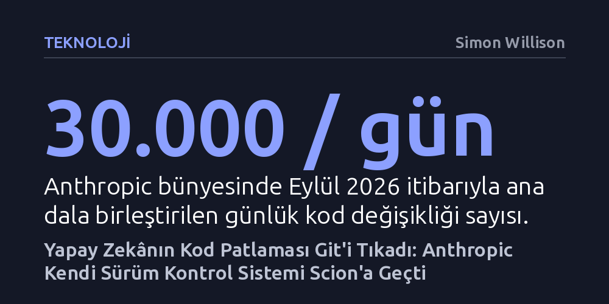

TEKNOLOJI · Simon Willison · 2026-10-15
Anthropic, yapay zekâ modellerinin günlük kod birleştirmelerini 30 binin üzerine çıkarmasıyla Git yetersiz kalınca Scion adlı kendi merkezi sistemini geliştirdi. Yedi kişilik bir ekibin beş ayda tamamladığı geçiş, otonom yazılımcıların geleneksel geliştirme araçlarını nasıl işlevsizleştirdiğini gösteriyor.
İnsan geliştiriciler için tasarlanan geleneksel yazılım araçlarının, otonom yapay zekâ ajanlarının yarattığı devasa kod trafiği karşısında yetersiz kaldığını ve baştan tasarlanması gerektiğini gösteriyor.

Yazılım dünyasında Git, son yirmi yıldır tartışmasız bir endüstri standardı konumundaydı. Ancak Anthropic'in iç geliştirme süreçlerinde yaşanan dönüşüm, bu yerleşik standardın sınırlarına gelindiğini çarpıcı biçimde ortaya koydu. Şirket bünyesindeki geliştirme faaliyetlerinde Claude gibi gelişmiş yapay zekâ modellerinin kod yazmaya başlaması, kod üretim hızında benzeri görülmemiş bir sıçrama yarattı. Mayıs 2026'da günde yaklaşık 2 bin 500 kod birleştirmesi yapılırken, yalnızca dört ay sonra, Eylül ayında bu sayı günde 30 binin üzerine fırladı.
Bu devasa kod patlaması, klasik dağıtık sürüm kontrol mekanizmalarını işlemez hale getirdi. Anthropic'in ana kod tabanı geçmişi tek başına 100 gigabayta ulaşırken, sıkıştırılmış tek bir çalışma kopyası dahi 25 gigabaytı aştı. Sürekli entegrasyon sistemleri, araştırmacı deneyleri ve ajan çalışma alanları için her gün 25 milyondan fazla kod çekme (checkout) işlemi gerçekleştiriliyordu. Tüm bu işlemler standart Git protokolüyle yürütülseydi, şirketin sunucularında günde 600 petabaytı aşan bir veri trafiği oluşacaktı. Git artık bu akıl almaz işlem yükünü taşıyamıyordu.
Anthropic, Git üzerinde geçici yamalar yapmak yerine köklü bir kararla kendi sürüm kontrol sistemini sıfırdan inşa etti. 'Scion' adı verilen bu yeni sistem, Git'in her geliştiricinin tüm depo geçmişini yerel bilgisayarına indirdiği dağıtık mimariden uzaklaşarak merkezi bir yapı benimsedi. İlk bakışta Subversion dönemine bir geri dönüş gibi görünse de Scion, Google'ın Piper ve Meta'nın Sapling sistemlerinden esinlenen modern ölçekleme prensiplerine dayanıyor.
Sistemin temel taşı, Meta'nın Sapling için geliştirdiği Mononoke bileşeninden alınan 'türetilmiş veri' (derived data) mimarisi oldu. Bu yaklaşımda istemciler onlarca gigabaytlık geçmişi ve dosya ağaçlarını yerel disklerine indirmek zorunda kalmıyor; yalnızca anlık ihtiyaç duydukları veriyi talep ediyor ve sunucu bu veriyi arka planda dinamik olarak hesaplıyor. Üstelik sistemin açık ara en büyük kullanıcısı insan mühendisler değil, kesintisiz biçimde internete bağlı çalışan Claude ajanları olduğu için, Git'in en büyük vaatlerinden biri olan çevrimdışı çalışma kabiliyetine hiçbir şekilde ihtiyaç duyulmadı.
Altyapı dönüşümü yalnızca Scion ile sınırlı kalmadı; kod inceleme süreçlerini yönetmek amacıyla 'Antique' adında yeni bir mekanizma devreye alındı. Anthropic, kod denetimlerinde modellerin birbirini incelediği 'karşıt denetim' (adversarial review) yöntemini yoğun biçimde kullanıyor. Bu süreçte bir yapay zekâ modeli, diğer modelin yazdığı koddaki güvenlik açıklarını, performans darboğazlarını ve mantık hatalarını titizlikle arıyor.
Ancak bu otonom denetim sürecinin beklenmedik bir yan etkisi ortaya çıktı: miyopluk ve aşırı mühendislik. Yapay zekâ modelleri, binde bir gerçekleşebilecek kuramsal senaryolar ve varsayımsal tehlikeler için mimariyi gereksiz yere karmaşıklaştırma eğilimi gösterebiliyor. Bu noktada deneyimli insan mühendislerin devreye girmesi gerekti; mühendisler Claude'u aşırı tasarımlardan uzaklaştırarak sistemin sade ve hedefe odaklı kalmasını sağladı. Yedi kişilik bir mühendislik ekibi, Claude ile el ele vererek Git'ten Scion'a tam geçişi sadece beş ay gibi rekor bir sürede tamamladı.
Anthropic'in yaşadığı bu dönüşüm, yazılım mühendisliğinde çok daha geniş kapsamlı bir devrimin habercisi niteliğinde. Ekran karşısında saatlerce düşünüp günde birkaç değişiklik yapan insan geliştiricilere göre tasarlanmış araçlar, saniyeler içinde binlerce satır kod üreten ve test eden otonom ajanların dünyasında kaçınılmaz olarak yetersiz kalıyor. Sürüm kontrolünden kod incelemeye, test altyapılarından derleyicilere kadar tüm yazılım araç zincirinin yapay zekâ ajanlarının çalışma temposuna göre yeniden yapılandırılması gerekiyor.
Scion, yapay zekânın yalnızca kod yazmakla kalmayıp bizzat kendisini barındıran altyapıyı da dönüştürdüğünün somut bir kanıtı. Dağıtık ve yerel kopyalara dayalı klasik yazılım kültürü, yerini yapay zekâ modellerinin sürekli çevrim içi çalıştığı, sunucu tarafında anlık hesaplanan ultra hızlı merkezi mimarilere bırakıyor.